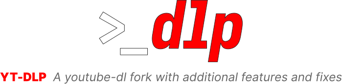
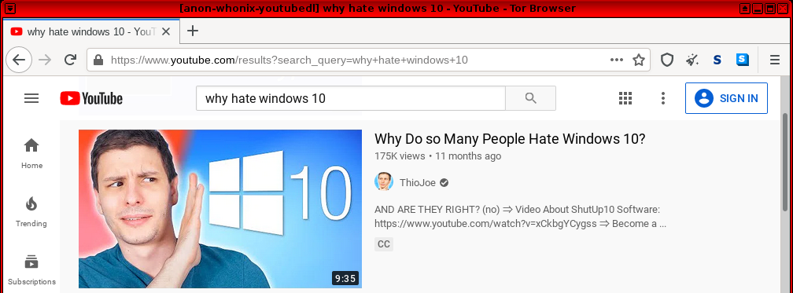
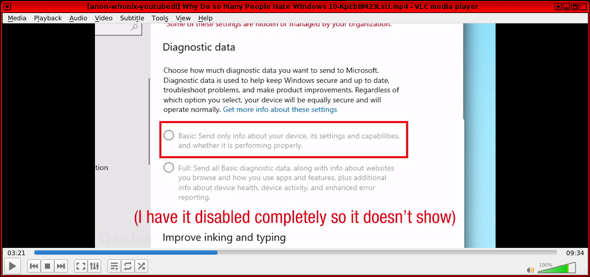

We believe security software like Whonix needs to remain Open Source and independent. Would you help sustain and grow the project? Learn more about our 14 year success story and maybe DONATE!
YouTubeDocumentationE-MailPrevious page: YouTubeIndex page: DocumentationNext page: E-Mailyt-dlp YouTube Video Downloader in Whonix

yt-dlp is a command-line program to download videos from
YouTube.com and a few more sites.
yt-dlp is a software fork of
youtube-dl.
Introduction
yt-dlp is simple to use in Whonix. Simply follow the
instructions to install it below, identify the relevant YouTube video
URL, then run the application in a terminal to download the video. Once
it has finished downloading, VLC Media Player (installed by default) can
be used to view the video.
Special Notice
No longer supported. Unsupported.
Forum discussion: https://forums.whonix.org/t/yt-dlp-questions-in-relation-to-documentation-and-whonix-18/22736
Installation
The Whonix wiki normally recommends that additional software is
 Installed from Debian stable, but in the case of
Installed from Debian stable, but in the case of yt-dlp
there is often a significant difference between the stable and backports
versions. Since the developers frequently update the software to address
broken functionality when attempting downloads from various websites, an
upgrade of yt-dlp from Debian backports may be
required.
yt-dlp can be installed from Debian backports. This is
non-ideal, see footnote. [1]
1. Update the package lists.
sudo apt update
2. Install the select software.
sudo apt -t trixie-backports install yt-dlp
3. Done.
The procedure of installing the package from the backports repository is now complete.
Pip? If the user knows that python pip is, see footnote. Otherwise ignore this. [2]
Usage
First identify the relevant YouTube video URL in Tor Browser, then right-click the link and select "Copy Link Location". In the example below it is "Why Do so Many People Hate Windows 10?" (https://youtube.com/watch?v=KpEb8M23LsU)
Figure: Example YouTube Video to Download

Next, open a terminal. To download the relevant YouTube video, run.
Note: Replace link-to-video with the chosen URL.
yt-dlp link-to-video
Finally, open VLC Media Player and select the relevant file to play:
Media →
Open File... →
Open the video file
Figure: VLC Media Player

Extensive documentation is available describing a host of possible options, including:
- general options
- network options
- geo restriction
- video selection
- download options
- filesystem options
- thumbnail images
- verbosity/simulation options
- workarounds
- video format options
- subtitle options
- authentication options
- Adobe pass options
- post-processing options
In addition the documentation describes numerous configuration settings, output templates, format selection and video selection among other topics. Many readers will be interested in how to select preferred video quality; see here for a quick overview.
Alternatives
See Also
Footnotes
- Users should
 Prefer Packages from Debian Stable Repository, but using backports is
better than manual software installation or using third party package
managers since this prefers APT. To contain the risk, Non-Qubes-Whonix users
might want to consider using Multiple Whonix-Workstation™ and Qubes-Whonix™ users might
want to consider using Multiple Qubes-Whonix™ Templates or
Software Installation in an App Qube.
Prefer Packages from Debian Stable Repository, but using backports is
better than manual software installation or using third party package
managers since this prefers APT. To contain the risk, Non-Qubes-Whonix users
might want to consider using Multiple Whonix-Workstation™ and Qubes-Whonix™ users might
want to consider using Multiple Qubes-Whonix™ Templates or
Software Installation in an App Qube. - Pip cannot be recommended without disclaimer.
Avoid Third Party Package Manager
Categories: Documentation